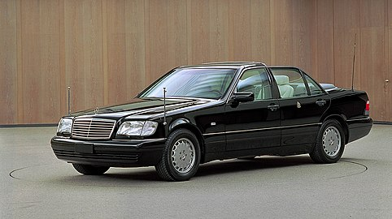

The development on the W140 began in 1981, with official introduction
originally set in September 1989. Several different design proposals were
studied from 1982 until 1986, when a definitive design proposal by Olivier
Boulay was selected on 9 December 1986. Several engineering prototypes
were evaluated from early 1987, with the final exterior design locked in
September 1987. The design patents were filed on 23 February 1988 in West
Germany and 23 August 1988 in the United States.[4] The lead designer
Bruno Sacco attributed Jaguar's XJ40 sedan and BMW's E32 7-Series as a
major influence in W140 design.[5][6] The initial exterior design proposal
called for the two different cooling grille designs to denote the lower
and upper model, similar to the idea of round and rectangle headlamps on
the W123 (1976-1985). Innovative metal-forming technology allowed the
extension of the engine hood/bonnet to the front bumper, with the grille
placed inside the extruded metal. The W140 became the second model after
the R129 (1989-2001) to have this extruded metal grille. When BMW
introduced a new 7-Series (E32) in 1986, the first post-war German
passenger V12 engine, M70, was offered. This surprise announcement forced
Mercedes-Benz to delay the introduction of the W140 by eighteen months to
1991. The delay allowed Mercedes-Benz to develop the new V12 engine and to
rearrange the engine bay to accommodate the gargantuan V12 engine along
with upgrading the brake system. The final development prototypes were
completed in June 1990, with pilot production models being built from June
1990 to January 1991. The project cost overruns and eighteen-month delay
resulted in the departure of Wolfgang Peter, Mercedes-Benz' chief
engineer.[7] The price of a W140 was considerably higher than its
predecessor, the W126, (up to 25 per cent) leading to slow sales during
the recession of 1990-1994. The slow sales of the W140 can also be
attributed to the wave of Japanese luxury cars that were introduced before
the W140 was launched; while the base price of a six-cylinder 300SE was
$71,500 in 1992, the Lexus LS400 started at $44,300, the Infiniti Q45
started at $43,600, and the Acura Legend started at $28,800. This led many
prospective W140 buyers to switch to its competitors, due to their lower
prices, lower maintenance costs, better reliability, and in the case of
the LS400, an ownership experience that was just as good, if not better
than its European competitors. As a result of the price increases and
stiff competition, Mercedes-Benz shifted from "engineer's design" to
"market-driven design" in the 1990s. Many enthusiasts argue that the W140
was the "last true S-class," as its successor, the W220, was criticized
for having inferior engineering, and in the case of early models, poor
reliability. Two engines, a stillborn V16 engine based on an elongated V12
engine and an 8.0 W18 engine[8] meant for a hypothetical 800 SEL/S 800
were, again, developed in response to the purported rumour of BMW
exploring a V16 engine and testing it in a 7-Series (E32) mule, named
Goldfisch V16. The W18 did not proceed past the blueprint stage, but
Mercedes-Benz had a small fleet of 85 W140 prototypes with V16 engines.
Due to the increasing concern for climate protection and fear of sending a
wrong message to the public in the early 1990s, the V16 engine was quietly
cancelled.[9] In March 1994, the updated W140 was unveiled at the 1994
Geneva Auto Salon and went on sale in April 1994. In 1995, the two tone
exterior appearance was made to be monotone, low-beam xenon headlamps were
added and the rear indicator lenses became clear. The change were later
was introduced in June 1996 as 1996.5 models in Europe and 1997 models in
the United States. The W140 received notoriety in 1997 when Diana,
Princess of Wales died in a car crash, involving an S 280 model, in a
Paris tunnel.